Future Factory with Augmented Reality
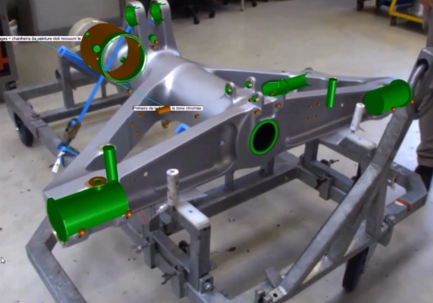
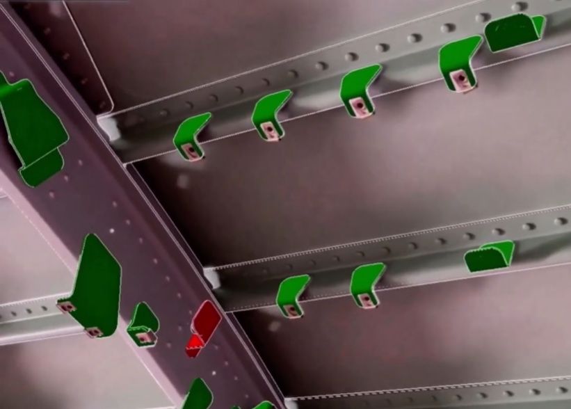
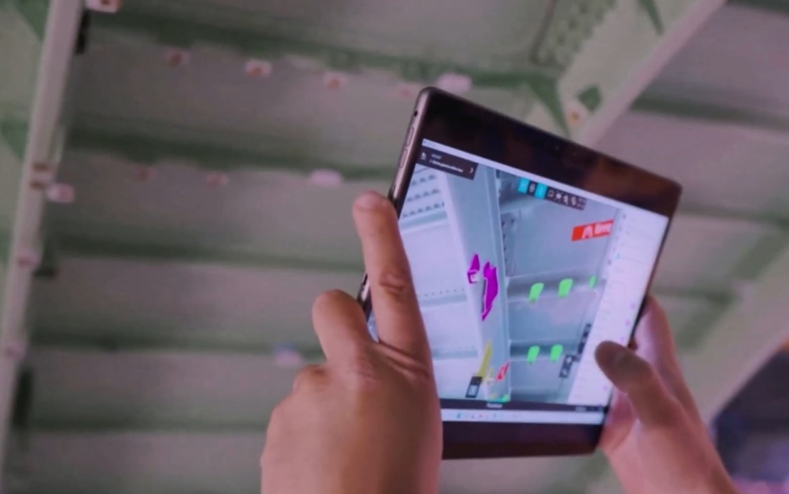
What?
- Launch augmented reality in a static aerospace environment to accelerate aircraft manufacturing efficiency while eliminating quality escapes
How?
- Built using DELMIA Augmented Experience, graphic work instructions are displayed as a digital twin in real-time to operators and inspectors. Streamlined expansion using CATIA and CATIA Composer while building custom compliance and conformity software. Generated reports pushed into MES for full build record accountability
Transonic Business Jet Performance
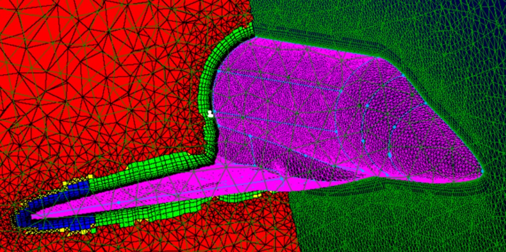
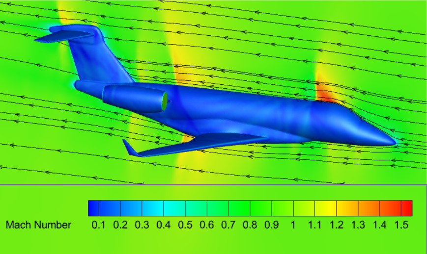
What?
- Perform a comprehensive CFD analysis of a super-midsize business jet at Mach 0.95 and 40,000 feet
How?
- Symmetric model of jet imported into Pointwise with T-rex grid generated to resolve leading edges and boundary layers. Second order upwind simulation in ANSYS Fluent to ontain steady-state performance characteristics. Post-processing performed in Tecplot for performance, streamline, shock, and boundary layer analysis
GLADOS CUBESAT
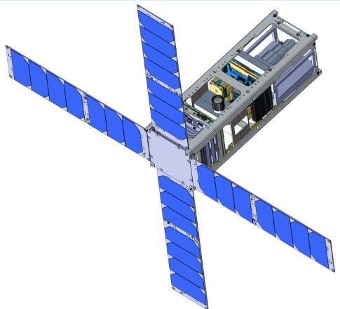
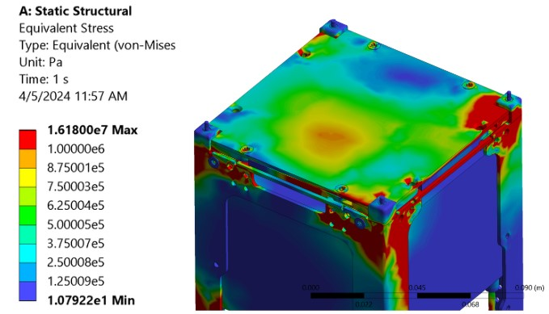
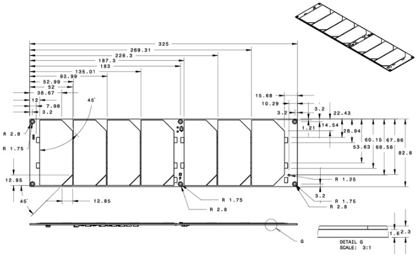
What?
- Create a 3U CubeSat capable of cataloguing Resident Space Objects in low earth orbit
How?
- Given mission specifications and supplier models, created custom brackets along with part and assembly drawings in CATIA and SolidWorks until design meets ANSYS FEA structural load conditions during launch and deployment
RD-180 Rocket Engine Nozzle Performance

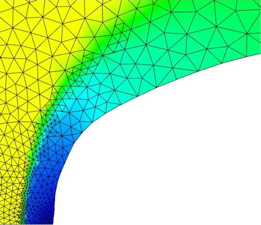

What?
- Design an efficient axisymmetric grid of a rocket with an RD-180 engine at Mach 4 and 100,000 feet for ascent and descent.
How?
- Approximated nozzle curve of RD-180 shell and generated grid in Pointwise. Iterative runs in ANSYS Fluent using grid adaptation to resolve shock boundaries and inner engine. Exported to Tecplot for streamline and shock boundary analysis. Video of descent simulation linked here
REMOTE CONTROLLED HELICOPTER
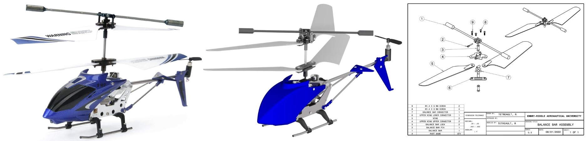
What?
- Reverse engineer and improve a remote controlled helicopter using modern engineering standards
How?
- Produced 3D CAD models and detailed 2D engineering drawings using CATIA. Designed full assembly documents and kinematic simulations on helicopter components. Decreased unique item count by 5% by duplicating existing parts
SATELLITE ASTRODYNAMICS INVOLVING J2 PERTURBATIONS

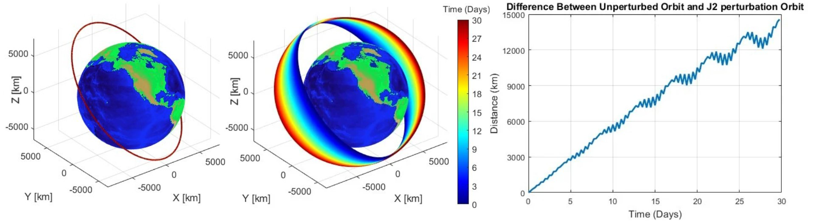
What?
- Research and depict a visual representation how the oblateness of the Earth influences the orbital properties of the satellite
How?
- Utilizing ODE45 and inital conditions, the differential equations of the satellite are integrated to show the rotation of the orbital plane over a month. Using MATLAB, at each time step the position and velocity vectors of both scenarios are compared to show the relative shift of the satellite
NUMERICAL METHODS FOR AIRFOIL ANALYSIS
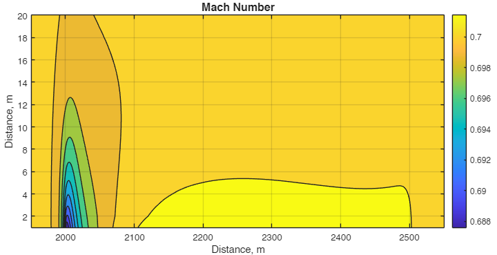
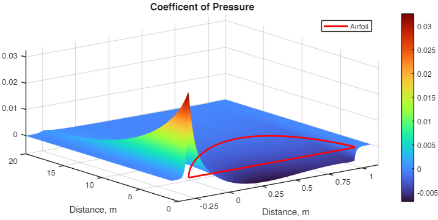
What?
- Second order in space discretization of the linear potential flow equation of any symmetric airfoil in a compressible flow field using MATLAB
How?
- Utilizing Gauss-Sidell iterations for all internal points, Newmann for j=1, Dirichlet for all other boundary conditions, the governing equations of the airfoil are integrated to showing Mach contours and pressure coefficient across the airfoil surface and beyond. Environment ran to steady-state using residual convergence criteria